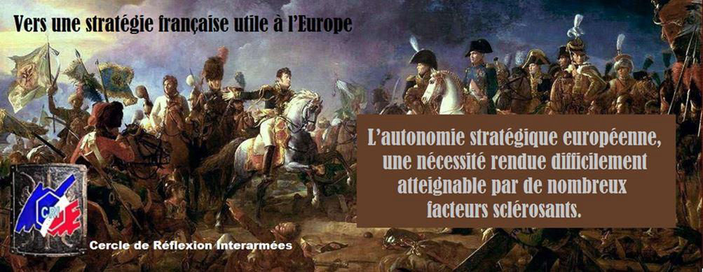
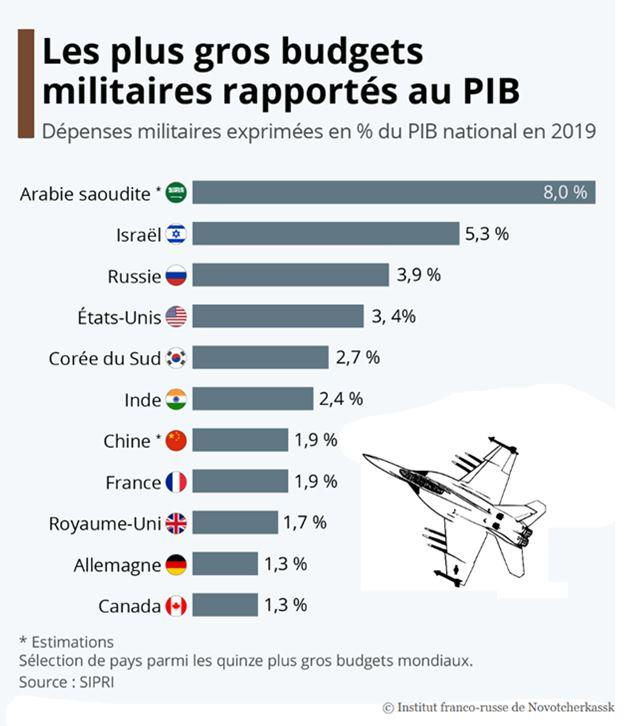
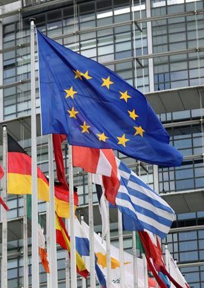
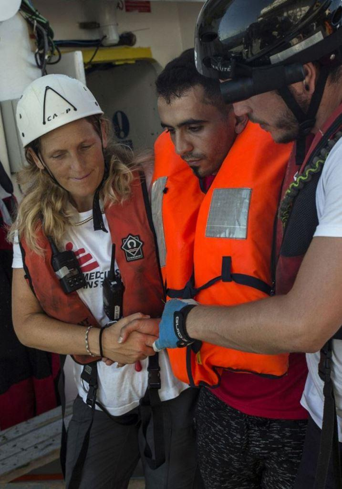
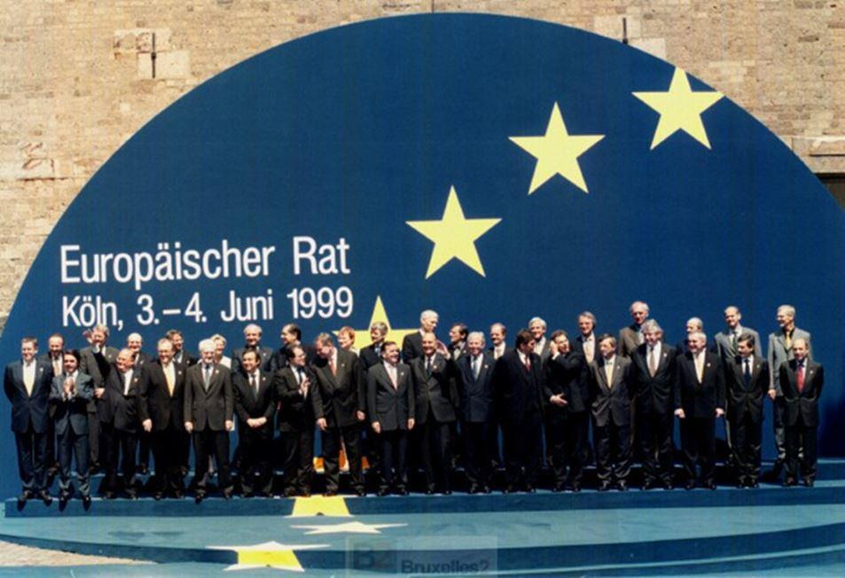
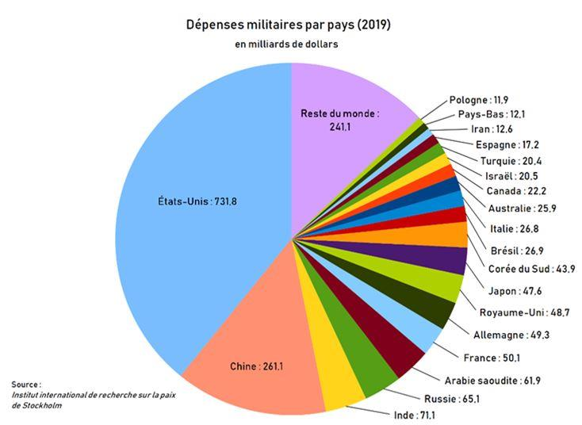

L’autonomie stratégique européenne, une nécessité rendue difficilement atteignable par de nombreux facteurs sclérosants
par Cercle de Réflexion Interarmées

Préambule
Indépendance de décision et détermination sont l’apanage de la puissance. Elle répond, en effet, à une ambition, une confiance dans des atouts, autant qu’à une volonté d’affirmation. Elle procède de la définition d’objectifs internationaux, de la structuration des chemins et de l’organisation des moyens pour y parvenir. Sur le continent européen, si nous mettons à part le cas particulier du Royaume-Uni, seuls deux États, la France et la Russie, puissances nucléaires, peuvent prétendre à une réelle autonomie stratégique.
Une organisation internationale, malgré des abandons de souveraineté concédés par ses membres, ne répond à aucun de ces désirs. Inévitablement l’État le plus puissant et le plus déterminé impose ses intentions. Ce pouvoir, ainsi concédé, ne peut durer que dans la mesure où certains y trouvent un réel confort. Hors de l’hypothèse d’une rupture, les autres États se soumettent. Ils renoncent à accéder à un rôle majeur. Seule une réunion d’États partageant les mêmes intérêts et les mêmes objectifs, peut imposer un dialogue stratégique.
Au sein de l’Union Européenne, la France se heurte à l’alignement de ses partenaires - considéré par eux comme impératif - sur les États-Unis et leur instrument de domination militaire, l’OTAN. L’Allemagne, qui pourrait, en collaboration avec la France, contribuer à faire évoluer l’UE vers une stratégie propre, donne l’impression, pour l’heure, de chercher à devenir l’allié privilégié des États-Unis sur le continent européen, en s’orientant vers une intimité de son dispositif militaire avec le leur et en œuvrant pour banaliser les avantages géopolitiques actuels de la France.
Toutefois nous pouvons nous interroger sur le besoin d’impliquer l’UE dans une vision stratégique propre et une organisation militaire qui en découlerait. Les arguments ne manquent pas.
Le premier d’entre eux est de mettre un terme au risque conflictuel que la politique des États-Unis fait courir, sur le continent, face à la Russie, mais aussi de disposer des forces suffisantes pour peser, dans le monde, sur les intentions, ou l’action souvent erratique, de Washington.
Le second est, évidemment économique. Il est patent que chaque pays, considéré individuellement, ne veut, ou ne peut, disposer aujourd’hui, des forces lui permettant de s’aligner sur les États-Unis, la Russie ou la Chine. Les priorités étant devenues davantage consuméristes, sociales, ou environnementales. Un non-dit chez tous les fidèles de l’OTAN est bien budgétaire.
Le budget militaire des États-Unis représente plus de 70% de la somme des budgets militaires des pays membres de l’OTAN.
L’alliance leur permet d’épargner des sommes considérables qui peuvent être investies ailleurs, sans doute au détriment de l’indépendance vraie. Mais que vaut-elle pour la plupart des membres de l’UE ?
Ils partagent, avec les États-Unis, les traits principaux d’une même civilisation mais n’ont cure des affaires du monde. Il ne faut donc pas s’étonner que l’industrie militaire française et européenne, ne puisse équiper pleinement les armées des pays membres. Une autonomie stratégique permettrait pourtant de lever un frein industriel, économique, scientifique et inévitablement politique. Ce dernier aspect prêtant cependant à débat, car ces pays, bien que partisans d’une Europe unie, récusent toute velléité d’une politique internationale distincte de celle des États-Unis. Ce qui les amène à réfréner les ardeurs visant à valoriser ces orientations souhaitables.
Le troisième argument est, précisément, politique. Il ne pourra y avoir de progrès dans l’amitié entre les nations européennes que si les pays, membres de l’UE, partagent des objectifs de sécurité et de rayonnement. Enfin, une souveraineté militaire devrait permettre de se tourner vers le véritable ennemi, commun à toutes les nations européennes, l’idéologie islamique intolérante et violente propagée par une immigration débridée et mal contrôlée.
Il faut admettre aussi quelques réalités profondes. L’UE actuelle s’est bâtie sur des bases marchandes et elle aboutira à un éclatement si elle est incapable de se réformer politiquement. En tant que telle elle n’a aucune influence au plan international. L’attitude de la Chine, à cet égard, est particulièrement significative.
Ainsi, lors de la crise de la Covid-19, elle a donné la priorité aux relations avec les États-Unis et avec les États, et apporté la preuve de sa piètre considération pour l’UE. De même dans sa volonté de rétablir les routes de la soie, elle ne traite qu’avec les pays et occulte une organisation dont la participation aux négociations pourrait se justifier.
Dans ce contexte, il est donc impossible de parler de défense européenne sans impliquer l’OTAN et les États-Unis. L’imbrication est telle et les intérêts de la plupart des pays européens tellement liés aux États-Unis, qu’évoquer une autonomie stratégique de l’UE relève d’un véritable défi ou d’une provocation.
La voie n’est pas tracée qui mènerait à une stratégie commune qui pourrait se démarquer de celle des États-Unis, malgré les structures mises en place, mais sans la volonté de les rendre efficaces. Malgré tout, la France pourrait œuvrer dans ce sens, mais à la condition de se référer à une solide vision à long terme, vis-à-vis de l’UE et de l’OTAN, préalable à sa liberté d’action, et de s’y tenir.
État de l’Union Européenne
Des scléroses nombreuses paralysent l’évolution de l’UE et l’accession à l’indépendance stratégique.
L’Union Européenne est loin de répondre aux principes d’une organisation démocratique. Elle est largement orientée vers l’économie, tout en imposant des règles politiques, juridiques et une relation de subordination aux États-Unis.
Des choix sous influence
Selon une étude ESSEC intitulée « La présence et l’influence des lobbies américains à Bruxelles », Bruxelles, abritant les institutions européennes, est devenue, de ce fait, l’un des plus importants centres de décision du monde en matière de choix économiques.
Il ne s’agit cependant pas d’un atout de puissance, mais le résultat d’une évolution consentante et liberticide, pour les pays membres, au profit d’une technostructure sans légitimité régalienne.
L’UE se montre donc fragile face à l’action d’États extérieurs homogènes, forts et ambitieux.
Les États constitutifs ont perdu quasiment leur souveraineté législative sur les grands sujets : 80% des lois nationales sont issues des directives européennes. En fait la hiérarchie des normes place les traités et les directives européennes au-dessus des constitutions qui doivent être adaptées à l’évolution du Droit européen.
La CEJ [2] a réaffirmé récemment sa place dans un communiqué où elle affirme être « la seule compétente pour constater qu'un acte d'une Institution de l'Union est contraire au droit de l’Union ». Elle a en outre souligné que « des divergences entre les juridictions des États membres … seraient susceptibles de compromettre l'unité de l'ordre juridique de l'Union et de porter atteinte à la sécurité juridique », précisant que « les juridictions nationales sont obligées de garantir le plein effet du droit de l’Union ».
Cette affirmation, à la limite du chantage, est récusée par certains Pays, comme l’Allemagne. [3] Elle fait fi de la notion pondératrice de « Subsidiarité ».
Le droit des personnes est lui-même soumis, dans certains cas, à des instances supranationales. Dès lors, il est parfaitement compréhensible que Bruxelles soit la deuxième capitale mondiale du lobbying derrière Washington. Là se trouve le pouvoir juridique.
On estime entre 2500 et 3000 le nombre de groupes d’intérêt qui y pratiquent cette forme de pression, parmi lesquels 70 % défendent des intérêts privés. Les intérêts des États-Unis sont autant pris en compte que ceux des États membres. La puissance de leurs groupes de pression, dans la capitale européenne, est aujourd’hui un élément essentiel des relations transatlantiques.
Il faut savoir que dans les années 70, la Chambre de Commerce Américaine (AmCham) s’est installée à Bruxelles. Cette organisation regroupe les dirigeants de 145 des plus grosses entreprises de ce pays, implantées en Europe, comme les géants d’internet, Google, Amazon, les banques d’affaire, Boeing, Procter & Gamble, Monsanto, Mac Donald’s ou encore General Motors…
Alors que les législations douanières étaient encore fortes, les dirigeants de l’Amcham, ont rapidement compris tout l’intérêt qu’ils pouvaient tirer de la création d’un grand marché européen, préalable à la réalisation d’un vaste marché transatlantique. Ils mirent en œuvre de multiples groupes de travail, mobilisant, par domaine, quelques 650 correspondants [4].
Il est connu que le livre blanc sur le marché unique s’avère très proche du rapport « Europe 1990 : un agenda pour l’action » rédigé par l’ERT (European Round Table), un groupe de pression suscité par les États-Unis.
Le succès des lobbies américains en Europe peut s’expliquer par l’efficacité de leur organisation et leur certitude de servir les intérêts supérieurs de leur pays.
Mais l’atout majeur de ces groupes de pression reste leur remarquable capacité d’expertise sur des sujets pointus et variés : elle leur permet de suppléer les insuffisances des parlementaires et de la Commission. Cette mainmise doit être rapprochée des intentions des « pères fondateurs » du Marché commun dont la proximité affective et intellectuelle avec Washington est désormais connue. Dans l’organisation européenne actuelle l’idée d’une stratégie autonome procède d’un vœu pieux…
La philosophie européenne, méfiante à l’égard des peuples et inévitablement technocratique et ploutocratique, porte en elle même son échec. À moins de la modifier fondamentalement, en s’appuyant sur les nations, il ne pourra y avoir d’horizon géopolitique indépendant.
Sans rejeter un partenariat avec les États-Unis, une première démarche dans le sens d’une souveraineté stratégique devrait passer par une très forte atténuation du rôle des groupes de pression, notamment d’outre-Atlantique, dans les décisions européennes.
Une évolution insouciante de la réalité des peuples
L’imposition d’une réunion, contre nature, d’États, rend vite caduque toute tentative de position commune, tout en dévalorisant le rôle des nations. Elle débouche sur un affaiblissement global. Les pertes de souveraineté consenties ne se traduisent pas par une souveraineté plus forte de l’ensemble.
Il est salutaire de rappeler quelques réalités.
Le risque existe que les inconditionnels d’une Europe, qui pourtant affiche son déficit de puissance et son fonctionnement procédurier et bureaucratique, en même temps que, jusqu’à un passé récent, la rigidité de son système monétaire, expliquent que le seul moyen d’en corriger les lacunes serait d’avancer aveuglément vers une Europe fédérale.
La vision est doublement fausse.
D’abord parce qu’elle fait le pari, contre toute évidence, d’un affaiblissement des nations stimulant la capacité d’action de l’Union ; ensuite parce qu’elle fait l’impasse sur la rivalité naturelle des puissances.
Notons que ces principes sur lesquels repose le fonctionnement de l’UE n’ont aucun équivalent dans un monde de près de 200 États. Comme l’écrivait Raymond Aron dans « Paix et Guerre entre les Nations », la nation reste la clé des rapports internationaux.
Cette antinomie entre le supranationalisme bruxellois et la nation se retrouve dans une formule de Léo Hamon, opposant le sentiment, toujours spontané et incontrôlable et la réflexion plus ou moins construite: « La France est ma patrie, l’Europe est ma raison ».
L’illusion des dirigeants européens a été de croire que la paix entre les nations pourrait découler du droit international, de l’augmentation des coopérations, des échanges économiques et commerciaux, ou encore de la conscience d’une solidarité humaine transnationale.
S’il est impossible de nier le rôle de ces facteurs dans une relative stabilisation de la planète, ni que des coopérations universelles seront de plus en plus sollicitées pour traiter de préoccupations communes, à l’instar des questions environnementales, la recherche de la puissance demeure toujours une constante des relations internationales. Le droit n’y changera rien. Il n’est après tout que l’expression provisoire de la réussite dans un rapport de forces. Il peut être contesté et modifié.
Les traités n’ont pas empêché la prolifération nucléaire en Inde, au Pakistan, en Israël, en Corée du Nord. Ils n’ont pas freiné l’expansion de l’OTAN vers l’Est, ni la récupération de la Crimée par la Russie ou la séparation, par l’OTAN, de la province du Kosovo de sa Serbie. Ils ne dissuadent pas la Chine de menacer militairement Taïwan, de mater les aspirations démocratiques à Hong Kong, de réclamer la souveraineté sur toute la mer de Chine du sud, plus grande que la Méditerranée, et d’empiéter sur la ZEE de tous les riverains.
En somme, les spéculations de l’allemand Emmanuel Kant (1724-1804) sur une paix perpétuelle entre les nations, née de la raison, cède toujours devant l’intuition de l’anglais Thomas Hobbes (1588-1679) qui, presque un siècle auparavant, affirmait que les relations internationales seraient toujours gouvernées par de l’émotionnel, de la rivalité, de la défiance et de l’orgueil national.
Aujourd’hui, la stratégie extérieure de la Chine donne raison à Hobbes ; elle s’affiche comme l’exemple le plus frappant de la persistance de l’affectif prévalant sur la raison. Son régime cultive avec force un puissant nationalisme anti-occidental. Il développe une ambition impériale à ses approches directes et propose, à ses partenaires - y compris européens - du projet des nouvelles routes de la soie, un modèle de gouvernance radicalement opposé aux principes des démocraties occidentales. Les Européens réagissent en ordre dispersé à ces prétentions universelles, parce qu’ils ne peuvent opposer à la Chine aucune cohérence politique, par déficit d’adhésion populaire et de stratégie commune.
Quand la France, l’Allemagne et la Commission, désignent Pékin comme un « rival systémique n », la Grèce, l’Italie, le Portugal et plusieurs pays d’Europe Centrale et Orientale, par intérêt financier à court terme, restent dans l’illusion de la neutralité et de l’honnêteté des échanges avec la Chine, ou tout au moins dans l’idée qu’ils pourront en maîtriser les conséquences.
Ces pays ont accepté de nouer des partenariats commerciaux et financiers avec les groupes étatiques chinois, y compris en laissant leurs capitaux prendre, pour tout ou partie, le contrôle d’actifs stratégiques, comme les ports et les réseaux de distribution d’électricité. Cette attitude montre, au-delà du défaut de clairvoyance ou de prudence, que l’absence de solidarité stratégique européenne est un des nombreux dangers qu’elle recèle. La France n’est pas exempte de ces actions suicidaires. Elle a laissé le Groupe Chinois Casil–Europe devenir actionnaire majoritaire de l’aéroport de Toulouse Blagnac, utilisé par Airbus industrie – parts rachetées depuis par le Groupe français Eiffage, et celui de Châteauroux proche d’un Centre de transmissions stratégiques majeures.
Même la Commission, pourtant consciente des risques qu’elle a, elle-même, identifiés et signifiés, en mars 2020, au président chinois, a cédé aux pressions de Pékin, à la fin avril, par crainte de représailles commerciales. Sans moyens de puissance, nés d’une union forte, elle ne pouvait faire autrement.
De même, la suppression, par Bruxelles, à la demande pressante de la Chine, des informations d’un de ses rapports sur les manquements de l’appareil politique chinois lors de la crise de la Covid-19, restera comme un des exemples criants d’une préoccupante faiblesse. Il s’agissait pourtant de vérités soulignant les freins mis aux nécessaires réactions au début de la pandémie et la désinformation globale orchestrée pour détourner les critiques et défendre l’image internationale du pays.
Nous constatons, à l’évidence, qu’avec les fondements actuels des institutions européennes, l’affirmation d’une volonté de résistance ne se vérifie pas, face à une puissance comme la Chine ayant un substrat culturel impérial et une unité de population.
Vu par les « pères fondateurs », et leurs successeurs, comme la première étape vers une société mondialisée, ou plus exactement «américanisée», sans nations, débarrassée des cadres historiques et identitaires, le montage européen utopique, sans frontières et désincarné, n’a réussi à secréter ni l’énergie, ni les institutions capables de rivaliser avec le système autocratique chinois, comme, d’ailleurs, avec n’importe quel autre ensemble humain homogène.
Pour conforter encore l’idée qu’au cœur des relations internationales se trouve bien la puissance et non le droit ou l’image virtuelle d’une communauté humaine, observons qu’en Europe c’est bien la puissance américaine ou russe, face à la faiblesse européenne qui provoque les schismes politiques.
En prenant du recul, nous constatons que la vision de la France est très isolée.
Dans cette Europe désunie, elle spécule toujours sur le couple franco-allemand dont la solidité n’est plus, à l’évidence, ce qu’elle était, pour resserrer la cohésion politique des États membres et avancer vers une Europe puissance.
Elle est confrontée à l’incertitude et alimente des projets irréalistes par l’espoir ou le rêve. Mais ni l’un ni l’autre ne confèrent les attributs concrets ni de la puissance, ni de la sécurité.
La France, pourtant, par sa longue histoire, devrait savoir que cette puissance ne peut résulter que de la conjonction de moyens matériels et immatériels et de la définition déterminée des buts, à l’intérieur d’un système cohérent.
Mais qui parmi nos dirigeants s’appuie sur l’histoire ?
L’UE ayant étouffé la voix des peuples ne dispose d’aucune légitimité et d’aucune maîtrise à l’international
Il est évident que c’est la démocratie qui a amené la paix sur le continent et non pas l’organisation européenne. Pire, l’UE est devenue un danger pour la paix, en impliquant l’OTAN et les États-Unis dans sa vision internationale et en réduisant, de ce fait, l’effort de défense de chacun des pays. À l’opposé des recommandations du Rapport Harmel de 1967 et du Conseil de Cologne de 1999, qui militaient pour une politique de confiance Est-Ouest, les États-Unis, via l’OTAN, créent une suspicion, entretiennent une phobie et ouvrent une fracture dangereuse avec la Russie.
Nul ne peut être certain que dans les crises qui se profilent, les alliés extérieurs viendraient au secours de l’Europe. Il est bien connu qu’un allié n’est pas obligatoirement un ami et, quand bien même le serait-il, sa sécurité et ses besoins propres priment sur ceux des autres.
Face aux problèmes de ce monde, l’UE est incapable d’agir.
Elle s’achemine vers « un avenir triste et sinistre, voire un risque patent d’insignifiance militaire » comme le pronostiquait Robert Gates dans son discours d’adieux au GQG de l’OTAN en juin 2011.
Elle est, au plus, incantatoire. Elle s’est substituée à des États traditionnels qui, eux, avaient l’expérience des relations internationales et détenaient alors les moyens et la volonté de défendre les intérêts de leurs peuples. Ainsi, aujourd’hui, face à l’immigration invasive exploitée par le monde islamiste, elle est incapable d’apporter une réponse. Pire, les conséquences des accords de Schengen aggravent la situation en empêchant tout filtrage efficace à l’intérieur de son espace.
Tout migrant pénétrant dans un des pays signataires, peut, sans grande difficulté, circuler et se diriger où bon lui semble dans l’espace Schengen. À vrai dire cette faiblesse est également exploitée par des ONG qui, sous prétexte d’humanisme, contribuent à entretenir ce flux dangereux pour l’équilibre des sociétés et la protection de notre civilisation.
La signature, en juillet 2018, par les États européens, dont la France, du pacte de Marrakech sur la gestion des flux migratoires, certes non contraignant, n’a fait que confirmer auprès des populations l’aveuglement des autorités sur le sujet.
Décuplant les effets de la mondialisation, qui n’est rien d’autre que l’américanisation du monde, l’UE, agent indirect de Washington, provoque le mécontentement des peuples, face à des décisions auxquelles ils ne participent pas: immigration de masse, concurrence débridée, abandon des services publics, laminage des avancées sociales, destruction du tissu industriel, effondrement de l’agriculture, chômage.
L’absence de volonté commune à l’égard de ces risques et méfaits amène des réponses différentes des États, créant ainsi des situations diverses. …
Toutes sortes de maux que les Français, probablement pour partie à tort, mais très souvent à juste titre, attribuent au Léviathan européen. Ils ne sont pas les seuls.
Claude Cheysson, ministre des affaires étrangères du président Mitterrand, disait:
« je constate que beaucoup de grandes étapes de la construction européenne n’auraient sans doute pas été franchies s’il avait fallu préalablement les approuver par référendum».
Chaque fois que l’expérience a été tentée, aux Pays-Bas, en Irlande, en France, au Royaume-Uni, elle s’est effectivement traduite par un échec pour l’UE.
Ce refus d’entendre les peuples est éminemment dangereux. Aveu d’une conception antidémocratique de la politique, il peut provoquer des réactions incontrôlables que l’organisation subira.
Il est indispensable de prendre en compte ce risque.
Seule une «Europe des Nations» évitera le risque que porte en elle une organisation évoluant vers un pur fédéralisme en opposition avec le sentiment national des peuples.
La France se doit d’œuvrer dans ce sens en incitant ses partenaires à respecter les peuples.
Il ne s’agirait, après-tout, que d’observer les principes sur lesquels repose la démocratie. Cette volonté fédéraliste forcée aggrave les oppositions entre nations, car les peuples européens ne semblent pas disposés à communier au sein d’une structure étatique commune. C’est un simple constat.
Une fois encore l’UE pêche par son caractère technocratique, hors des réalités sociales et historiques.
De plus ce système, par essence, affaiblit les États qui finissent par montrer leurs insuffisances, suscitant ainsi des contestations, parfois violentes, et des revendications auxquelles ils ne peuvent répondre que par de fausses promesses ou des replis détériorant davantage leur image.
Il devient urgent de réformer l’UE en modifiant fondamentalement son fonctionnement de telle sorte que les États conservent la possibilité d’accepter ou de refuser des directives et que les aspects fondamentaux, tenant aux souverainetés, fassent l’objet d’accords ou de partenariats entre États volontaires, hors des structures de Bruxelles, dont le rôle serait de les encourager, voire d’apporter sa caution, mais aucunement de les définir, et encore moins de les imposer.
Il est indispensable, aussi, de changer l’état d’esprit de cette énorme administration et de la réduire: elle ne doit plus agir «en-soi» mais dans l’intérêt des États. Le danger serait considérable de confier à une organisation internationale les aspects les plus charnels de la souveraineté. Autant il paraît utile et de bonne politique que les gouvernements puisse s’entendre sur des intérêts communs - sécurité, coopération industrielle, relations internationales..- autant il est inepte d’en confier l’élaboration à une administration incapable de prendre en considération les besoins réels de chacun et ses intérêts géopolitiques.
Ajoutons encore le manque de pertinence, jusqu’à un passé récent, d’une politique financière commune, alors que les États affichent des développements et des obligations différents. En période de récession ou de crise, la politique du plus riche n’est pas obligatoirement celle qui convient à tous.
Malgré quelques intentions affichées, la sécurité est sous traitée aux USA
Comme le montrent les différents traités et décisions prises lors des conseils européens, l’UE s’est efforcée de bâtir une politique européenne de sécurité commune, sans pour autant parvenir à une indépendance stratégique.
Le traité de Maastricht, entré en vigueur en 1993, définit des objectifs, non plus seulement économiques, mais politiques et de sécurité (PESC). Le Traité d'Amsterdam, (en vigueur le 1er mai 1999) prévoit le renforcement de la PESC conformément à l'article 17 du traité UE. Le Conseil européen de Cologne, de juin 1999, opte pour l’acquisition d’une capacité politique, diplomatique, militaire et industrielle. Il en établit les besoins et initie toute la construction organique de la PESC.
La notion de Politique Européenne de Sécurité et de Défense est lancée et le Rapport de la présidence sur le renforcement de la PESC, très clair et volontariste.
«Cela requiert la poursuite d'un effort de défense soutenu, la mise en œuvre des adaptations nécessaires et notamment le renforcement de nos capacités en matière de renseignement, de projection, de commandement et de contrôle. Cela exige également des efforts pour l'adaptation, l’entraînement et la mise en cohérence des forces européennes nationales et multinationales.
…Nous sommes déterminés à favoriser la restructuration des industries européennes de défense dans les États concernés. Avec les industriels, nous œuvrerons à une collaboration plus étroite et plus efficace des industries de défense. Nous chercherons à améliorer encore l'harmonisation des besoins militaires ainsi que la programmation et la fourniture des armements, de la façon que les États membres jugeront appropriée.»
Cependant cette déclaration qui aurait pu être regardée avec optimisme, par les partisans d’une Europe puissance, est entachée par une affirmation rappelant que « L'Alliance atlantique reste le fondement de la défense collective de ses membres ». L’UE, velléitaire, ne se libère pas de la contrainte otanienne et américaine.
Le traité de Nice de 2001 apporte quelques affinements, mais le fond reste inchangé.
Le traité de Lisbonne, de décembre 2007, englobe les intentions au sein des objectifs de l'action extérieure de l'Union. Il s’agit, en fait, surtout, d’un ensemble d’affirmations générales et éthiques qui n’engagent nullement l’UE et visent davantage à encourager une intégration de tous les pays dans une économie mercantiliste sous une « gouvernance mondiale ».
Un titre de « Haut Représentant de l’Union pour les affaires étrangères et la politique de sécurité », prévu dès le traité de Nice, est concédé à un notable. Il ne détient aucun pouvoir réel.
Une fois encore nous constatons, dans la rédaction de ce texte, l’influence de l’ultra-libéralisme et du transnationalisme promus par les États-Unis et leurs grands groupes industriels et financiers.
Depuis 2001, il existe, auprès de ce Haut Représentant, un État-major militaire de l’Union Européenne : ses fonctions sont réduites à l’évaluation de situation, l’alerte et la planification stratégiques. Il reçoit ses directives du Comité militaire de l’Union Européenne composé des chefs d'état-major des armées de chaque pays membre. La faiblesse de ses effectifs tout comme sa subordination complexe, limitent son rôle.
Il constitue à ce jour la seule structure militaire permanente intégrée de l’UE.
L’organisation de la sécurité dépend donc de la vision que les États peuvent en avoir. Elle est inévitablement otanienne. En Juin 2017, est enfin créé le Fonds Européen de la défense avec deux volets- «Recherche» et «Développement et acquisition» et une première «aumône» en guise de budget.
Pour résumer, le chemin a été tracé, souvent par de vrais concepteurs. La France est restée le trublion. Mais jusqu’à ce jour elle n’a pu réellement peser, ligotée par son inclusion dans les «structures intégrées de l’OTAN». Elle doit parler plus fort et plus clair.
L’Europe est un tout humain, historique, culturel, économique. La Russie en fait partie. Elle n’est pas l’ennemi à abattre.
Très clairement, il n’y a pas plus de PESC que de PSED, mais une bureaucratie budgétivore dans une Europe dédiée au commerce et satisfaite d’une collusion avec les États-Unis.
Pour moduler la formule choc de l’actuel président français « l’OTAN est en état de mort cérébrale », il parait plus juste de dire que le lobe européen a été victime d’un AVC.
Relations Europe-États-Unis
Il s’agit, d’être pleinement conscient de plusieurs aspects, regardés aujourd’hui comme intangibles. Tous sont imposés par Washington.
SOUS L’EMPRISE D’UN EMPIRE
C’est dans la nature de tous les regroupements humains de vouloir étendre leur territoire et affirmer leur suprématie. C’est toujours cette ambition qui s’exprime par la guerre et la conquête. Victorieuse, elle repousse les frontières d’un pays et l’amène à dominer d’autres territoires habités par des peuples différents. Avec les États-Unis il n’en est rien.
Leur domination extérieure n’est pas territoriale. Elle est d’une toute autre nature, beaucoup plus insidieuse parce qu’elle offre une sorte de confort dans l’abaissement, sans porter atteinte à l’indépendance officielle des pays ralliés. C’est un mouvement inscrit dans la durée mais grandement dangereux, car ce pays est menaçant face à ceux qui ne partagent pas sa vision universaliste, ou lorsqu’il imagine un risque de concurrence.
Le Général Mark Milley, Joint Chiefs of Staff (JCofS) depuis le 20 septembre 2019, l’a affirmé brutalement : « Je veux être clair avec ceux qui tentent de s’opposer aux États-Unis…. Nous possédons la capacité de nous déployer rapidement et nous détruirons n’importe quel ennemi, n’importe où, n’importe quand ! ..».
Si cet État fédéral a profité de sa contribution majoritaire à la victoire sur les forces allemandes et nippones en 1945, ce ne fut pas en annexant des terres, mais bien en imposant des règles dans les relations internationales, in fine, à son seul profit. Organisations diverses, militaires, financières ou économiques, ont assuré, sous l’hypocrite destination affichée de servir l’humanité, la domination du système américain sur une large partie de la planète.
C’est ainsi qu’est né l’empire des États-Unis d’Amérique car il s’agit bien d’un empire auquel l’Europe se subordonne.
N’oublions pas, aussi, que l’organisation européenne a renoncé à toute ambition stratégique dès sa fondation. Elle s’est bâtie pour éviter la guerre entre ses membres. Cette paix, ardemment souhaitée, nécessitait un garant, un protecteur. Il ne pouvait s’agir que de la puissance des États-Unis.
Hormis la France du général de Gaulle, les autres pays européens se sont mis d’accord pour déléguer leur direction politique et militaire à leur allié d’outre Atlantique.
LA RUSSIE IMPORTANT PARTENAIRE ET FAUX ENNEMI
Dans cette vision impériale, l’attitude des États-Unis à l’égard de la Russie, cherchant à en faire un ennemi de manière totalement artificielle, a sans doute pour but de justifier la poursuite du développement de leur complexe militaro industriel et le maintien des États européens sous leur domination militaire, donc politique.
Leur budget de la Défense s’établit à 750 milliards de dollars, alors que celui de la Russie se monte à 65 milliards de dollars, loin derrière celui de la Chine et de l’Arabie saoudite ou encore de l’OTAN de 1036 Md$ jusqu’à un passé récent. Bien sûr les pouvoirs d’achat diffèrent et peuvent tempérer ces rapports, mais globalement les sommes investies par les États-Unis au profit de leurs armées sont sans commune mesure avec celles dont disposent les armées russes.
Les États-Unis ont défini et affiché une stratégie, face à la Russie, - cf. Nuclear Operations - Joint Publications 3-72 Juin 2019/ JCofS - impliquant d’emblée l’emploi de l’arme nucléaire tactique à faible énergie, certes sur le sol russe, et précisément pour cela, ouvrant à une riposte à laquelle la France ne pourrait échapper.
La Russie, qui pourtant ne propage plus aucune idéologie, est nommément désignée comme l’ennemi. La France, qu’elle le veuille ou non, subit cette conception américaine et son concept de dissuasion est mis en péril. Elle ne peut à la fois, assurer la défense de ses intérêts vitaux par une stratégie dissuasive propre et dépendre des États-Unis, seuls maîtres de l’engrenage de la bataille de l’avant vers l’option nucléaire, comme membre de l’organisation militaire intégrée.
Cette approche est d’autant plus périlleuse que l’arme nucléaire avait toujours été regardée comme permettant « l’équilibre de la terreur », visant un non-emploi.
Pour la France, son utilisation tactique avait pour but de lancer à l’adversaire un ultime avertissement en concentrant la frappe sur ses seules forces. Pourtant, demain, comme hier et aujourd’hui, la dissuasion nucléaire sera au cœur de l’équilibre du monde. L’Europe ne pourra en faire l’impasse.
La fidèle subordination des pays européens aux États-Unis, hormis, dans ce domaine, de la France et du Royaume-Uni, tient, depuis 1949, à cette réalité. La France est maintenant, depuis le Brexit, formellement et légalement, le seul pays de l’UE à disposer de cette puissance atomique. C’est très certainement un atout.
RÉALITÉS ET INTENTIONS SOUS-JACENTES
De plus cette politique agressive suscite un rapprochement contre nature entre la Russie et la Chine, potentialisant ainsi une menace. De ce fait, elle pourrait devenir réelle, même si chacun de ces deux pays ne porte en lui aucune volonté d’agression militaire contre l’Occident. Dans les années passées, la Russie a rétabli sa souveraineté sur sa province de Crimée [5] qu’une décision administrative soviétique - 1954 - lui avait retirée. Retrouver l’intégrité de son sol ne peut décemment lui être reproché pas plus, toute chose égale par ailleurs, qu’il ne pouvait être reproché à la France, après la défaite de 1870, de tout faire pour ramener en son sein l’Alsace-Moselle.
De même, s’agissant de l’Ukraine qui doit son indépendance à la seule bonne volonté de Moscou, il faut avoir l’honnêteté de reconnaître, d’une part, que le berceau de la Russie se trouve autour de Kiev et que, d’autre part, 17,2% de sa population est russe et fidèle à la mère patrie.
Les États-Unis risquent de nous entraîner dans une guerre contraire à nos intérêts.
Il est révoltant de savoir que si nous refusons leur vision inique nous ferons partie de « l’axe du mal ».
Cependant le but des États-Unis pourrait être tout autre. En maintenant par toutes sortes de ruses l’idée d’un ennemi en Europe, ils consolideraient la subordination de leurs alliés et leur besoin sécuritaire. En effet, imaginons que la Russie soit reconnue comme ne présentant aucun danger pour la paix sur le continent, Washington, dans cette hypothèse, aurait bien du mal à s’opposer à un rapprochement entre l’UE et Moscou et à justifier pleinement l’existence de l’OTAN.
L’ensemble ainsi constitué, représenterait un adversaire économique et politique majeur.
La Russie doit donc rester l’ennemi.
En effet, si l’Europe mettait en œuvre les intentions affichées, lors du Conseil de Cologne en 1999, dans son annexe III, Washington aurait bien du mal à réorienter sa vision géopolitique:
« L'Union considère la Russie comme un partenaire essentiel pour atteindre cet objectif [paix durable sur le continent] et elle est déterminée à coopérer avec elle. Elle propose que le partenariat stratégique se développe dans le cadre d'un dialogue politique et de sécurité permanent,/…./. Ce dialogue permettra une concertation renforcée dans toutes les instances pertinentes dont la Russie et les États membres sont membres, en particulier l’ONU et l’OSCE…»
Pour le Cercle de Réflexions Interarmées.
Général (2S) Henri Roure
Général (2S) Jean-Serge Schneider
Ingénieur Général de l’Armement (2S) Louis A. Roche
Général (2S) Marc Allamand
Général (2S) Jean Claude Allard
Capitaine de Vaisseau (ER) Alexis Beresnikoff
Général (2S) Grégoire Diamantidis
Monsieur Marcel Edouard Jayr
Contre-Amiral (2S) François Jourdier
Général (2S) Christian Renault
Général (2S) Jean-Claude Rodriguez
Général (2S) Jean-Pierre Soyard
Dans le prochain numéro de « Méthode » : le piège du lien transatlantique et comment sortir de ce piège.
NOTES ET RÉFÉRENCES
1. Articles déjà parus dans Capital:
- «Il faut se libérer de l’emprise américaine et se rapprocher de Moscou» 30/04/2020
- « Du danger pour l’Europe de la stratégie nucléaire des États-Unis et de l’OTAN» 30/05/2020
2. Cour Européenne de Justice
3. S’agissant du programme d'achats d'actifs lancé par la Banque centrale européenne, les juges allemands, en avril 2020, ont lancé un ultimatum à la BCE. «Si le Conseil des gouverneurs n'adopte pas une nouvelle décision démontrant de façon substantielle et compréhensible que les objectifs de politiques monétaires poursuivis par le PSPP (programme de la BCE sur l’acquisition d’obligations souveraines sur les marchés secondaires) ne sont pas disproportionnés par rapport aux effets économiques et budgétaires qui en découlent, la Bundesbank ne pourra plus participer à la mise en place et à l'exécution du programme», écrit la cour dans son jugement. Autrement dit, elle cesserait ses achats d'actifs. En outre, la banque centrale allemande pourrait appliquer cette règle aux titres qu'elle détient déjà en portefeuille.
4. étude ESSEC: « la présence et l’influence des lobbies américains à Bruxelles » 05 avril 2015.
Les Lobbies; https://agone.org/elements/europeinc/enligne/4/index.html; Observatoire de l’Europe industrielle; «Comment les multinationales construisent l’Europe & l’économie mondiale»:12/04/2005,
5. Le « Khanat » de Crimée est annexé à l'Empire russe depuis 1783. En 1954, Nikita Khrouchtchev transfère la Crimée à la RSS d'Ukraine de manière symbolique.11 mars 2014 le parlement de Crimée déclare l'indépendance de la république de Crimée (réunissant la république autonome de Crimée et Sébastopol). Le 18 mars 2014, à la suite d’un référendum tenu le 16 mars, le gouvernement russe annonce que la république de Crimée (correspondant à l’ancienne république autonome de Crimée) et la ville de Sébastopol, deviennent deux nouveaux sujets de la fédération de Russie et le gouvernement ukrainien retire ses troupes de Crimée. Au niveau international, les États-Unis, l'Union européenne et d'autres pays s'opposent à la Russie, l'accusant de violer le droit international et la souveraineté de l'Ukraine. L'Assemblée générale de l'ONU adopte le 27 mars 2014, une résolution, non contraignante, qui dénonce le référendum en Crimée et le rattachement à la Russie; 78 pays s’abstiennent de voter la résolution.
Partager cette page